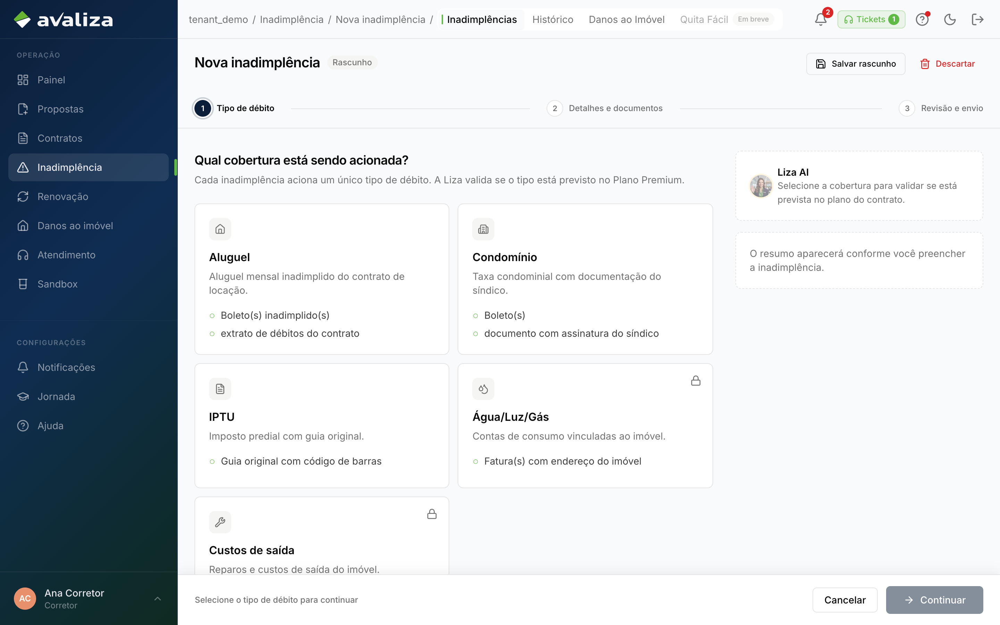
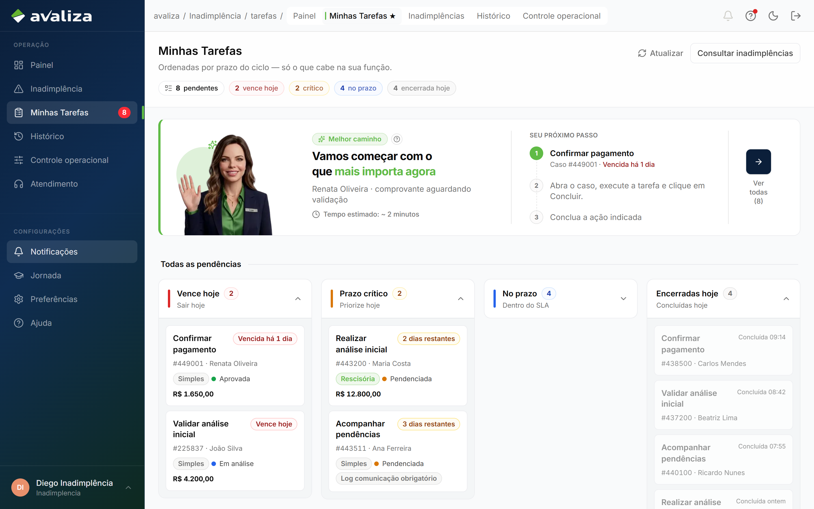

Cobrir inadimplência · jornada independente
Comunicar inadimplência
Dono do resultado: Imobiliária — Responsável da loja (corretor e gestor)
- Gatilho
- Loja tem débito a protocolar (pelo contrato ou Nova IN).
- Resultado
- Caso aberto. O corretor não analisa cobertura.
- Lifecycle
- Wizard de 3 passos. Termina quando protocola. O mérito é do analista de inadimplência.
- Atores na operação
- Corretor
corretor - Gestor da imobiliária
admin_imobiliaria
- Corretor
- Dono (setor)
- Imobiliária
- Outros setores
- Ninguém além do dono
Entra de
Ponto de entrada. Ninguém neste grafo é obrigado a chegar aqui.
Sequência interna (só aqui)
Estes momentos são obrigatórios dentro desta jornada. Não são o grafo global e não são o menu do papel.
-
Tipo de débito
Primeiro recorte. Vincula o contrato se veio dele.
-
Detalhes e documento
Sem evidência o caso nasce frágil.
-
Revisão e protocolar
Último clique da loja neste ciclo.
Telas (evidência)
Superfícies atuais onde este ciclo aparece. Abrir a tela não significa avançar uma etapa.

/inadimplencia/nova/tipo-debito · evidência, não etapa
/inadimplencia/nova/tipo-debito · evidência, não etapa
/inadimplencia/nova/detalhes · evidência, não etapa
/inadimplencia/nova/revisao · evidência, não etapaIsto não é esta jornada
- Minhas Tarefas e análise de cobertura não são continuação desta jornada — são outro dono.